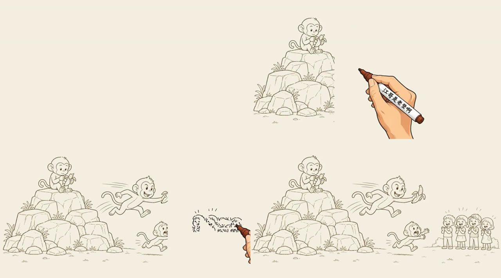
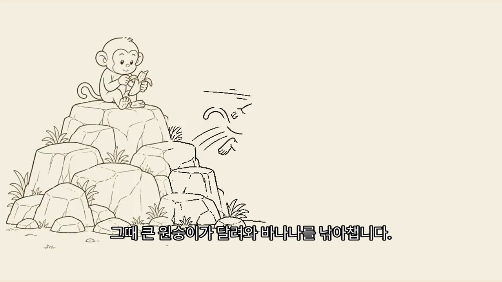
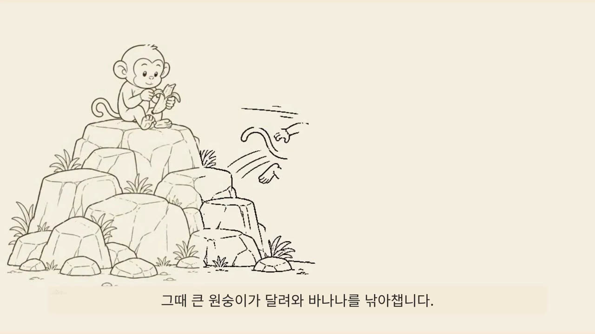

AI 화이트보드 애니메이션 영상 자동 제작 — 대본에서 완성 영상까지
미색 종이 위에 펜이 그림을 그려 나가고, 그 위로 차분한 내레이션과 자막이 흐르는 화이트보드 설명 영상을 대본 한 장으로 만듭니다. 그리는 과정은 오픈소스 srt-whiteboard-animation이, 목소리는 Gemini TTS가, 최종 조립은 ffmpeg(기본) 또는 HyperFrames(제목·자막 디자인이 필요할 때)가 맡습니다. 이 모든 것을 16편의 Google Antigravity에서 에이전트에게 단계별로 맡겨 구축하고, API 키는 내 PC 안에만 안전하게 둡니다.
목소리를 먼저 만들고, 그 실제 길이에 그림을 맞추세요 — 대본 → 음성 → 자막·장면 길이 → 그림 → 그리기 순서 → 렌더 → 조립.
자막을 먼저 정하고 나중에 음성을 붙이면 말이 그림보다 빠르거나 늦습니다. 이 편의 wbkit.py는 음성 파일의 실제 길이로 자막과 장면 길이를 만들고, 그리기 주석(annotation)의 시간까지 자동으로 맞춥니다.
01전체 구조와 도구
장면 하나에 생각 하나. Antigravity 에이전트가 원고를 장면으로 나눠 씀
장면마다 WAV 한 개. 실제 길이를 잼
장면 길이 = 음성 길이 + 0.5초 · 문장별 자막 시간
글자 없는 단순한 손그림, 16:9
배경 → 주인공 → 동작 → 반응. 시간은 자막에 자동 맞춤
펜이 선을 긋고 색을 입히는 장면 영상
장면을 이어 붙이고 음성 길이에 맞춰 마지막 그림을 늘림
| 도구 | 하는 일 | 하지 않는 일 | 라이선스·요구 사항 |
|---|---|---|---|
| srt-whiteboard-animation | 이미 있는 선화 PNG를 주석의 순서·시간대로 “펜으로 그려 나가는” MP4로 렌더. 자막 분석, 미리보기 편집기, 장면 합치기 포함. 에이전트용 스킬(SKILL.md) 형태 | 그림 자체를 만들지 않음 · 소리를 넣지 않음 | MIT · Python(opencv·numpy·PyAV를 자체 가상 환경에 설치) |
| HyperFrames | HTML·CSS·영상·음성을 결정론적으로 MP4 렌더(헤드리스 Chrome + FFmpeg). 자막·제목·전환 효과, 에이전트 스킬, 미리보기 스튜디오 | 화이트보드 손그림 효과는 없음 | Apache 2.0 · Node.js 22+, FFmpeg, Chrome · v0.9.19(2026-11) |
| Gemini TTS | 대본을 자연스러운 한국어 음성으로. 목소리 30종, 말투 지시 | — | Gemini API 키 · gemini-3.8-flash-tts(권장) |
| wbkit.py (이 편) | TTS 호출, 실제 길이로 자막·장면 길이, 주석 시간 자동 맞춤, ffmpeg 조립, HyperFrames 구성 파일 생성, API 키 점검 | — | Python 3.9+, ffmpeg (추가 설치 없음) |
| Google Antigravity (16편) | 위 과정을 에이전트에게 단계별로 맡기고 결과를 검토 | — | 무료 등급부터 |
02처음 접근과 바뀐 점
.agents/skills/에 넣어야 Antigravity가 스킬로 알아봅니다. 반면 HyperFrames 저장소는 개발자용 소스(시험용 영상 약 240MB를 Git LFS로 받음)라 영상 제작에는 필요 없습니다. npx hyperframes로 바로 쓰고, 에이전트 스킬이 필요하면 npx skills add heygen-com/hyperframes에서 “Antigravity”를 고릅니다. 템플릿의 setup_skills.py가 전자를 자동으로 설치합니다.wbkit.py srt가 WAV 길이로 자막과 sceneDurationMs를 만들고, wbkit.py sync가 주석의 요소별 시작·길이를 자막 줄에 맞춰 채웁니다.gemini-3.8-flash-tts(품질)와 gemini-3.8-flash-lite-tts(대량·저비용)가 권장 모델이고, gemini-3.1-flash-tts-preview는 이전 세대 미리보기로 분류되었습니다. 새 모델은 Interactions API(/v1beta/interactions)로 부르므로 wbkit.py는 모델 이름에 따라 호출 방식을 자동으로 고릅니다. HyperFrames에 내장된 로컬 TTS(Kokoro)는 무료지만 한국어를 지원하지 않습니다(지원 언어: 영어·스페인어·프랑스어·힌디어·이탈리아어·포르투갈어·일본어·중국어). 또 Gemini API 무료 등급은 입력과 출력이 서비스 개선에 쓰이고 사람이 검토할 수 있으므로, 공개 전 원고나 기밀 내용은 결제를 연결한 유료 등급에서 처리하세요. 로컬 오픈소스 TTS를 쓸 때는 한국어 지원과 모델 라이선스(상업적 이용)를 먼저 확인합니다.setup_skills.py가 이 문장을 “사용자의 언어로”로 바꾸고(원본은 SKILL.md.orig로 보관, MIT 라이선스), 작업 폴더의 AGENTS.md에도 한국어 규칙을 두었습니다. 미리보기 편집기(preview.html)의 버튼은 중국어라 9장에 대조표를 넣었습니다.drawing-hand.png)의 펜대에는 원작자의 채널명이 적혀 있습니다. 내 영상에 다른 창작자의 표식이 나오지 않도록 --bare-tip(펜 끝만)을 쓰거나 내가 만든 손 PNG를 넣습니다. 또 렌더 출력의 긴 변이 기본 1080픽셀이므로 유튜브용 풀HD는 --cap-long-edge 1920을 붙입니다(조립 단계에서 1920×1080으로 맞추기도 합니다)..env 파일에 넣었습니다. 간단하지만 .gitignore를 빠뜨리면 저장소에 올라가고, 에이전트가 파일을 읽다 채팅에 옮겨 적을 수도 있습니다. 그래서 운영체제 키체인 → 환경 변수 → .env 순서로 권하고, .env를 쓸 때는 .gitignore와 파일 권한을 keycheck로 점검하게 했습니다(4장)..agents/ 표준 위치에 두면 Antigravity와 Codex가 함께 읽고, Claude Code는 같은 폴더를 .claude/skills/에 복사해 씁니다. 이 편은 16편과 이어지도록 Antigravity를 기준으로 설명합니다.03준비물과 설치
| 준비물 | 확인 명령 | 설치 |
|---|---|---|
| Python 3.9 이상 | python --version | python.org (Windows는 설치 화면에서 “Add to PATH” 체크) |
| ffmpeg | ffmpeg -version | Windows winget install Gyan.FFmpeg · macOS brew install ffmpeg · Ubuntu sudo apt install ffmpeg |
| git | git --version | git-scm.com (없으면 GitHub에서 ZIP으로 받아도 됨) |
| Chrome 또는 Edge | — | 미리보기 편집기의 “저장”에 필요(File System Access API) |
| Node.js 22 이상 (선택) | node --version | HyperFrames로 조립할 때만 |
| Google Antigravity | — | 16편 4장 |
- 작업 폴더 받기템플릿 ZIP을 풀고
starter폴더를 원하는 곳에 둡니다(예:문서/whiteboard-video). 안에AGENTS.md,.agents/(규칙·스킬),tools/,script.md가 있습니다. - 그리기 스킬 설치그 폴더에서 터미널을 열고
python tools/setup_skills.py— srt-whiteboard-animation을.agents/skills/에 받고 한국어로 쓰도록 고칩니다. - 렌더러 환경
python .agents/skills/srt-whiteboard-animation/scripts/prepare_env.py→ 다시--check를 붙여 실행하면 마지막 줄에ENV_PY=…/.venv/bin/python(Windows는…\.venv\Scripts\python.exe)이 나옵니다. 이 경로가 렌더에 쓸 파이썬입니다. - (선택) HyperFrames
npx hyperframes --version으로 확인하고, 에이전트 스킬이 필요하면npx skills add heygen-com/hyperframes→ Core Skills와 Antigravity 선택 → Antigravity에서 새 대화 열기. - 도구 확인
python tools/test_wbkit.py— 시험 13개가 통과하면 준비 완료입니다(API는 부르지 않음).
04API 키를 내 PC에 안전하게
Gemini API 키는 Google AI Studio → Get API key에서 만듭니다. 키는 비밀번호와 같습니다 — 남이 쓰면 내 요금이 나가고, 무료 등급이면 한도가 바닥납니다.
세 가지 보관 방법 (위에서부터 권장)
| 방법 | 어디에 저장되나 | 장점 | 주의 |
|---|---|---|---|
| ① 운영체제 키체인 (권장) | Windows 자격 증명 관리자 · macOS 키체인 · Linux 키링 | 파일로 남지 않음. 에이전트가 폴더를 읽어도 보이지 않음 | pip install keyring 필요 |
| ② 사용자 환경 변수 | Windows 사용자 환경 변수 · macOS/Linux ~/.zshrc·~/.bashrc | Google SDK·대부분의 도구가 자동으로 읽음 | 설정 후 Antigravity·터미널을 다시 시작해야 보임. 셸 설정 파일은 백업·공유에 섞이지 않게 |
③ 프로젝트 .env | 작업 폴더의 .env 파일 | 가장 간단 | .gitignore 필수, 권한 600, 에이전트에게 “.env를 열지 말 것” 규칙 |
① 키체인에 넣기
pip install keyring
python tools/set_key.py # 키를 붙여 넣고 Enter — 화면에 표시되지 않습니다
python tools/set_key.py --check # 저장됨: AIza…② 환경 변수로 넣기
변수 이름: GEMINI_API_KEY
변수 값: (AI Studio에서 복사한 키)
→ 확인 후 Antigravity와 터미널을 모두 닫았다가 다시 엽니다.# 키가 셸 기록에 남지 않도록 read로 입력받아 추가
read -s -p "Gemini API 키: " K; echo "export GEMINI_API_KEY=$K" >> ~/.zshrc; unset K # bash는 ~/.bashrc
chmod 600 ~/.zshrc
source ~/.zshrc③ .env를 쓸 때
cp .env.example .env # Windows: copy .env.example .env
# 편집기로 .env를 열어 GEMINI_API_KEY= 뒤에 키를 붙여 넣고 저장
chmod 600 .env # macOS/Linux점검 — 키 값은 가려서 보여 줍니다
[통과] 키 찾음 — AIza…x9 (운영체제 키체인(keyring: gemini-api))
[통과] 코드·문서 파일에 키 형태 문자열 없음keycheck는 키를 찾는 출처(환경 변수 → 키체인 → .env), .env의 .gitignore 등록·권한·git 기록 여부, 코드·문서 속 키 형태 문자열(AIza…)을 검사합니다. 키 값 자체는 앞 4자리·끝 2자리만 보여 줍니다.
- 키 제한 걸기 — AI Studio에서 키를 만들 때 “Gemini API만 사용”으로 제한합니다. 다른 Google API와 같은 키를 쓰지 않습니다.
- 채팅에 붙여 넣지 않기 — 에이전트에게 “키를 설정해 줘”라며 키를 대화창에 붙여 넣으면 대화 기록에 남습니다. 키는 사람이 직접 키체인·환경 변수에 넣고, 에이전트에게는
keycheck만 돌리게 합니다(작업 폴더 규칙에 적어 둠). - 유출됐다면 — 즉시 AI Studio에서 그 키를 삭제하고 새로 발급합니다. git에 올라갔다면
git rm --cached .env로는 과거 기록이 지워지지 않으므로 반드시 키를 바꿉니다. - 무료 등급과 기밀 — 무료 등급 사용분은 서비스 개선에 쓰이고 사람이 검토할 수 있습니다(유럽경제지역·영국·스위스 제외). 기밀 원고는 결제를 연결한 프로젝트의 키로 처리합니다.
05Antigravity에서 만들기 (16편 연계)
- 폴더 열기Antigravity 앱에서 “Open Folder”로
starter폴더를 엽니다.AGENTS.md(한국어·단계 확인·키 금지 규칙)와 스킬 두 개(whiteboard-video,srt-whiteboard-animation)가 자동으로 읽힙니다. - 권한16편 8장의 Default 프리셋을 그대로 씁니다. 샌드박스 안의 명령은 네트워크가 없으므로 TTS 호출과 패키지 설치는 승인 창이 뜹니다 — 키가 쓰이는 순간을 사람이 확인하는 셈이라 오히려 안전합니다. 자주 쓰는 명령은 허용 목록에 넣습니다:
command(python tools/wbkit.py),command(ffmpeg),command(ffprobe). - 첫 요청아래처럼 목표와 진행 방식을 함께 줍니다. 에이전트는
whiteboard-video스킬을 따라 단계마다 멈추고 결과를 보여 줍니다. - 검토단계마다 나오는 아티팩트(계획, 장면표, 그림, 렌더 스크린샷)에 댓글로 고칠 점을 남기거나 승인합니다.
- 미리보기 편집그리기 순서를 손보고 싶으면 에이전트가 Chrome으로
preview.html을 열어 줍니다. “打开文件夹…(폴더 열기)”로 장면 폴더를 고르는 것은 브라우저 보안상 사람이 직접 눌러야 합니다.
/whiteboard-video
주제: 사회초년생을 위한 통장 쪼개기 (2장면, 합계 50초 안팎)
원고: (붙여 넣기 또는 notes.md 첨부)
- 0단계부터 시작해서 단계마다 결과를 보여 주고 내 확인을 받아 줘.
- 목소리는 Kore, 말투는 "차분하고 친절한 강의 톤".
- 그림은 글자 없이, 통장은 서로 다른 색의 유리병 4개로 표현해 줘.
- API 키는 내가 키체인에 넣어 두었어. keycheck만 실행해서 확인해.대본 좋아. tts를 먼저 --dry-run으로 보여 주고, 괜찮으면 실제로 만들어 줘.
장면 2의 두 번째 문장이 너무 빨라. 그 문장만 쉼표를 넣어 다시 녹음해 줘.
scene-01 그림에서 사람 얼굴이 너무 사실적이야. 더 단순한 선으로 다시 그려 줘.
sync까지 끝났으면 preview.html을 열어 줘. 내가 영역을 손본 뒤 저장할게.
첫 장면만 렌더해서 0초·중간·끝 스크린샷을 보여 줘.assets/whiteboard/<프로젝트>/에 넣습니다. 참고 영상 분석으로 이야기 구조를 잡고 Flow로 일관된 그림을 만드는 흐름은 13편의 지식 노트·스킬 방식과 그대로 이어집니다.06단계별 따라 하기 (명령어로)
에이전트 없이도 아래 명령만으로 끝까지 갈 수 있습니다. 에이전트에게 맡길 때도 같은 명령이 실행되므로, 무엇이 일어나는지 알아 두면 검토가 쉬워집니다.
1. 대본
## scene-01 원숭이 산의 바나나
작은 원숭이가 바위산 꼭대기에서 바나나를 들고 앉아 있습니다.
그때 큰 원숭이가 달려와 바나나를 낚아챕니다.
구경하던 아이들은 깜짝 놀라 손뼉을 칩니다.한 줄에 한 문장, 한 문장 30자 안팎. 괄호·기호·이모지는 그대로 읽히므로 넣지 않습니다. 이 한 줄 한 줄이 자막 한 개와 그리기 요소 한 개에 대응합니다.
2. 음성
python tools/wbkit.py tts script.md --dry-run # 요청 내용만 확인(키·요금 없음)
python tools/wbkit.py tts script.md --out assets/audio --voice Kore --style "차분하고 친절한 강의 톤"
# [scene-01] scene-01.wav — 12.0초목소리는 30종(Kore, Puck, Charon, Aoede …)에서 고르고, 대량 제작이면 --model gemini-3.8-flash-lite-tts. 대본을 고치지 않았으면 이미 만든 WAV는 건너뛰어 요금을 아낍니다. 429(한도 초과)·503 응답은 잠시 기다렸다가 다시 시도합니다.
3. 자막과 장면 길이
저장: narration.srt · scenes.json
scene-01 시작 0.0초 · 음성 12.0초 · sceneDurationMs 12500
1
00:00:00,000 --> 00:00:04,909
작은 원숭이가 바위산 꼭대기에서 바나나를 들고 앉아 있습니다.
2
00:00:04,909 --> 00:00:08,545
그때 큰 원숭이가 달려와 바나나를 낚아챕니다.장면 안에서는 글자 수에 비례해 시간을 나눕니다(어림). 단어 단위로 정확히 맞추고 싶으면 HyperFrames의 npx hyperframes transcribe assets/audio/scene-01.wav(로컬 Whisper)로 받아 고칠 수 있습니다.
4. 그림
장면마다 16:9 PNG 한 장을 assets/whiteboard/my-video/scene-01-monkey.png처럼 넣습니다. 만드는 법은 8장.
5. 그리기 순서 주석과 자동 시간 맞춤
{
"sceneId": "scene-01",
"canvas": { "width": 1672, "height": 941 },
"sceneDurationMs": 12500,
"elements": [
{
"id": "left", "label": "바위산과 작은 원숭이", "sequence": 1, "narrativeRole": "장면 깔기",
"subtitle": "작은 원숭이가 바위산 꼭대기에서 바나나를 들고 앉아 있습니다.",
"type": "structure",
"region": { "x": 20, "y": 120, "width": 540, "height": 780 },
"reveal": { "direction": "top_to_bottom", "startMs": 200, "durationMs": 4609,
"maskPaddingPx": 22, "protectedRegions": [] },
"handPath": { "start": [290, 130], "end": [290, 890], "easing": "easeInOut" }
}
]
} scene-01 — scene-01-monkey.annotation.json · 자막 줄과 1:1 · sceneDurationMs 12500
# 요소별 (startMs, durationMs): (200, 4609) → (5109, 3336) → (8745, 3155)영역(region)은 그림의 실제 픽셀 좌표(정수), 순서는 배경 → 주인공 → 동작 → 반응. 영역과 순서는 에이전트가 그림을 보고 정하고, 시간은 sync가 자막에 맞춥니다. 요소 수와 자막 줄 수가 다르면 말하는 구간을 고르게 나눕니다.
6. 렌더
<ENV_PY> .agents/skills/srt-whiteboard-animation/scripts/render_stream_whiteboard.py \
assets/whiteboard/my-video/scene-01-monkey.png \
assets/whiteboard/my-video/scene-01-monkey.annotation.json \
assets/whiteboard/my-video/scene-01-whiteboard.mp4 \
--bare-tip --cap-long-edge 1920
# OUTPUT=assets/whiteboard/my-video/scene-01-whiteboard.mp4Windows 명령 프롬프트에서는 줄 끝의 \ 대신 한 줄로 이어 씁니다. 결과 파일 이름은 scenes.json의 video 값(scene-01-whiteboard.mp4)과 같아야 조립 단계가 찾습니다.
7. 조립
python tools/wbkit.py assemble --video-dir assets/whiteboard/my-video --srt narration.srt --out final.mp4
# scene-01 — 영상 12.5초 / 음성 12.0초 → 장면 12.5초
# 저장: final.mp4 (12.5초)
# 자막을 화면에 새기고 배경음악을 낮게 깔기
python tools/wbkit.py assemble --video-dir assets/whiteboard/my-video --srt narration.srt --burn \
--bgm music.mp3 --bgm-volume 0.1 --out final.mp4python tools/wbkit.py hyperframes --srt narration.srt --out-dir hf-video
# 장면 영상과 음성을 hf-video/media/ 로 복사한 뒤
npx hyperframes lint hf-video # ◇ 0 errors, 0 warnings
npx hyperframes preview hf-video # 브라우저에서 미리보기·수정
npx hyperframes render hf-video -o final-hf.mp4장면 영상이 음성보다 짧으면 완성된 마지막 그림을 늘려 맞추고, 길면 잘라 맞춥니다. 내장 자막(mov_text)은 플레이어에서 켜고 끌 수 있고, --burn은 한글 글꼴(Noto Sans CJK KR 등)이 설치되어 있어야 합니다.
07시범 결과
srt-whiteboard-animation 저장소의 예제 그림(원숭이 산)에 한국어 대본·주석을 붙여 위 과정을 작성 환경에서 그대로 실행했습니다. 음성만 무음 자리표시 파일(12초)입니다.

원본 예제 그대로 렌더한 0.2초·3초·6초·8.5초 화면(손 그림 포함). 미리 그려질 영역이 먼저 드러나지 않고 순서대로 채워집니다.

ffmpeg 조립(자막 새김) 6초 화면 — 두 번째 자막이 나오는 순간 두 번째 요소(큰 원숭이)를 그리고 있습니다. sync가 맞춘 시간 그대로입니다.

HyperFrames 렌더(1920×1080, 12.5초, 렌더 33초) 6초 화면 — 같은 재료로 자막 상자 디자인을 HTML·CSS로 바꿀 수 있습니다. 결과 영상: demo-hyperframes.mp4.
hyperframes lint가 오류 3건을 냈습니다: 영상·음성에 id가 없으면 렌더에서 영상이 멈추고 음성이 무음이 되고, 글꼴 선언이 없으면 한글이 기본 글꼴로 바뀝니다. 그래서 wbkit.py가 장면마다 id를 붙이고, Google Fonts의 Noto Sans KR을 연결하고, 외부 애니메이션 라이브러리 없이 자막을 시간 구간으로만 표시하도록(data-no-timeline) 만들었습니다. 지금은 lint 0건으로 통과합니다. 렌더 전에는 늘 lint부터 돌리세요.08그림(선화) 만들기
그림이 단순하고 대상끼리 떨어져 있을수록 영역을 나누기 쉽고 그리는 모습이 깔끔합니다. 장면마다 아래 프롬프트의 {장면 내용}만 바꿔 씁니다.
Minimal hand-drawn whiteboard illustration, simple sketch lines, Notion-style doodle aesthetic.
Scene: {장면 내용 — 예: a small monkey sitting on a rocky hill holding a banana (left), a big monkey running in to grab it (center), three children watching in surprise (right)}.
Warm beige paper background #F5EBD7, dark gray sketch lines, only tiny accents of red, orange and blue.
Each subject clearly separated with generous empty space between them, clean background, calm mood, 16:9.
No text, no letters, no numbers, no labels, no logos. Not photorealistic, no 3D, no shading texture.- 글자 금지 — 생성 그림 속 글자는 깨지기 쉽고 한글은 더 그렇습니다. 글자는 자막으로 넣습니다.
- 배치를 대본 순서대로 — 왼쪽 → 가운데 → 오른쪽처럼 사건 순서대로 배치하면 그리는 흐름이 자연스럽습니다.
- 스타일 고정 — 첫 장면 그림을 기준 이미지로 두고 다음 장면부터 “같은 스타일로”를 붙여 참조 이미지와 함께 생성하면 장면끼리 선 굵기와 인물이 맞습니다(13편의 스타일 꼬리표와 같은 원리).
- 남의 캐릭터·실존 인물 금지 — 유명 캐릭터나 실존 인물을 닮게 그리지 않습니다.
09미리보기 화면(preview.html) 버튼 대조표
Chrome 또는 Edge로 .agents/skills/srt-whiteboard-animation/assets/preview.html을 엽니다. 서버 없이 동작합니다.
| 화면 글자 | 뜻 | 화면 글자 | 뜻 |
|---|---|---|---|
| 打开文件夹… | 폴더 열기(장면 PNG·주석이 있는 폴더) | 保存本场景 / 全部保存 | 이 장면 저장 / 모두 저장 |
| 绘制模块 · 调整顺序 | 그리기 요소 · 순서 바꾸기(목록을 끌어서) | 删除选中 | 선택한 요소 삭제 |
| 名称 · 字幕 | 이름 · 자막 | 方向 | 방향(从上至下 위→아래, 从左至右 왼→오 …) |
| 开始(ms) · 结束(ms) · 时长(ms) | 시작 · 끝 · 길이(밀리초) | 宽 · 高 | 너비 · 높이 |
| ▶ · 矩形代理揭示 | 재생 · 사각형으로 드러나는 순서 미리보기 | （未标注）/（无字幕） | (주석 없음) / (자막 없음) |
미리보기는 사각형으로 “어느 영역이 언제 드러나는지”만 보여 줍니다. 실제 펜 궤적은 렌더할 때 자동으로 만들어집니다. 저장하면 sceneDurationMs가 마지막 요소 끝 + 0.5초로 바뀌므로, 음성보다 짧아졌다면 sync를 다시 돌리거나 조립 단계에서 마지막 그림이 늘어나게 둡니다.
10주의할 점
| 상황 | 주의할 점과 바로잡는 방법 |
|---|---|
| 저장소 주소 | 그리기 도구의 정확한 주소는 github.com/geeklee/srt-whiteboard-animation입니다(끝의 n까지). 주소가 잘리면 클론이 인증 오류처럼 실패합니다. |
| 키를 채팅·코드에 붙여 넣을 때 | 대화 기록·저장소에 남습니다. 키체인·환경 변수에 사람이 직접 넣고 에이전트에게는 keycheck만 맡깁니다. |
| 환경 변수를 넣었는데 “키 없음” | Antigravity·터미널은 실행할 때의 환경 변수만 봅니다. 앱을 완전히 종료했다가 다시 엽니다. |
| 무료 등급 TTS | 입력·출력이 서비스 개선에 쓰일 수 있습니다. 기밀 원고는 유료 등급 키로. 미리보기 모델은 한도가 더 빡빡합니다. |
| 로컬 TTS로 비용을 아끼려 할 때 | HyperFrames 내장 Kokoro는 한국어가 없습니다. 다른 오픈소스 TTS는 한국어 품질과 모델 라이선스를 먼저 확인합니다. |
| 자막과 그림이 어긋날 때 | 음성을 다시 만들었다면 srt → sync → 렌더 순으로 다시 돌립니다. 미리보기에서 손으로 바꾼 시간은 sync가 덮어쓰므로 마지막에 손봅니다. |
| 선이 미리 보일 때 | 뒤에 그릴 대상이 앞 영역 안에 걸쳐 있으면 생깁니다. 앞 요소의 protectedRegions에 그 사각형을 넣습니다. |
| 손 그림의 표식 | 기본 손 이미지 펜대에 원작자 채널명이 있습니다. --bare-tip 또는 내 손 이미지를 씁니다. |
| HyperFrames 렌더가 멈추거나 무음일 때 | npx hyperframes lint부터. 영상·음성 id, 글꼴 선언, 외부 스크립트 로딩 실패(네트워크)를 알려 줍니다. Chrome을 못 찾으면 npx hyperframes browser ensure. |
| 렌더 시간 | 장면마다 CPU로 수십 초가 걸립니다. 첫 장면만 렌더해 확인한 뒤 나머지를 렌더합니다. 미리보기용은 --cap-long-edge 960으로 빠르게. |
| 유튜브 공개 | 손그림·AI 음성 설명 영상은 보통 “사실적인 합성 콘텐츠” 공개 대상이 아니지만, 실존 인물 목소리를 흉내 내거나 사실적인 인물을 넣으면 공개가 필요합니다(13편 11장). AI 음성 사용은 설명란에 밝히기를 권합니다. |
| 오픈소스 라이선스 | srt-whiteboard-animation은 MIT, HyperFrames는 Apache 2.0 — 상업적 이용 가능, 저작권 고지 유지. HyperFrames Studio의 Pro 기능(HeyGen 모델)은 별도 유료입니다. |
부록출처
모두 2026. 11. 7. 확인. 두 저장소는 이날 받은 버전(srt-whiteboard-animation 2026-07-28 커밋, HyperFrames 2026-11-07 커밋, CLI v0.9.19)으로 실행했습니다.
- GitHub, geeklee/srt-whiteboard-animation (MIT) — README, SKILL.md, scripts
- GitHub, heygen-com/hyperframes (Apache 2.0) — README, docs/guides/skills.mdx(Antigravity 설치), CLI
tts·transcribe·lint·render - Google AI for Developers, Speech generation (text-to-speech) · Gemini 3.1 Flash TTS preview
- Google AI for Developers, Using Gemini API keys — 환경 변수, 키 제한, 보안 수칙
- Google AI for Developers, Gemini API Additional Terms — 무료·유료 등급의 데이터 사용
- invideo, Gemini TTS Explained (2026. 8.) — 요금 비교
- YouTube, 참고 영상 — NotebookLM·Gemini로 이야기 구조, Flow로 일관된 화이트보드 그림을 만드는 흐름(작성자 원고 요약 기준)
- 작성자 원고 「AI 화이트보드 애니메이션 자동화 비디오 제작」